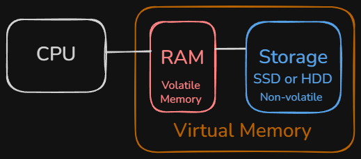

Whenever a computer runs a program, it needs to store the instructions, data, and any changes that occur while the program is executing. The Operating System is responsible for managing the computer's available memory and allocating it efficiently among all running processes. In most modern computers, memory is divided into two main categories: volatile memory, which is represented by Random Access Memory (RAM), and long-term storage, which is typically provided by Hard Disk Drives (HDDs) or Solid State Drives (SSDs).
Volatile memory is extremely fast and responsive, but its contents are lost whenever the computer is powered off. Because of its speed, RAM is used to hold the programs and data that the processor is actively working with. Activities such as playing a computer game, streaming music, or watching a movie benefit from RAM's speed by allowing data to be accessed quickly, reducing stuttering or pauses during playback. However, while it is quick, volatile memory doesn't persist if the computer is powered off, nor is it abundant.
For cases where large amounts of information needs to be stored long-term, HDDs and SSDs provide large amounts of persistent storage. It is worth noting the distinction between storage and memory. Although the terms are sometimes used interchangeably in everyday conversation, storage devices are much slower than RAM and serve different purposes. RAM's limited size presents a challenge for OSs as most modern applications often require more memory than is physically available, especially when multi-tasking. To overcome this challenge, operating systems use a technique called virtual memory, temporarily using part of the storage device to extend the amount of memory available to running programs.

Imagine you have a web browser with twenty tabs open, a music streaming application playing in the background, a word processor open for homework, and a video game running. Each program requires memory to store its instructions and data. The operating system continually decides which information should remain in RAM for fast access and which can be temporarily moved to storage until it is needed again. This allows all of the programs to remain open, even if the computer does not have enough physical RAM to hold everything at once. This allows many applications to run smoothly at the same time.